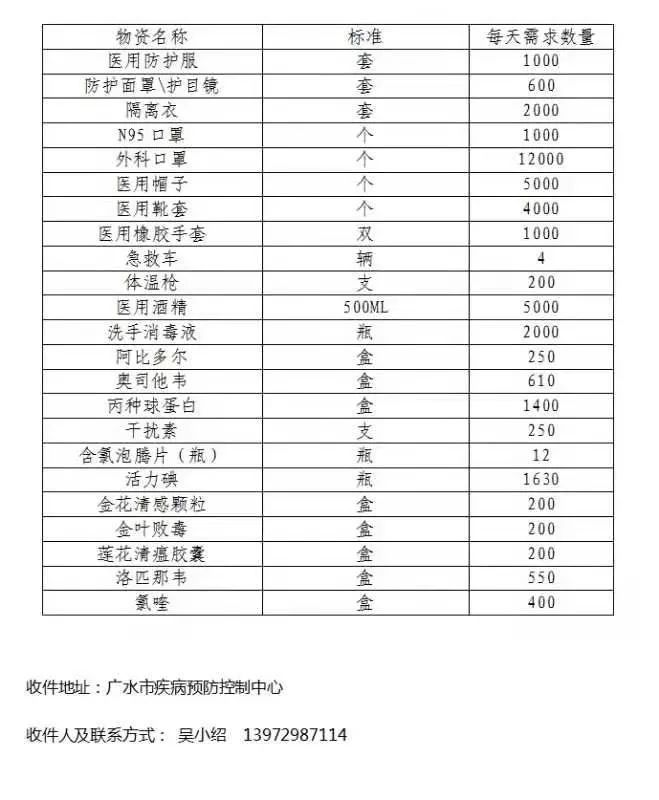

口罩为什么会短缺？
原文链接 备份链接 《人物》记者向多位寻求捐赠的医护人员咨询，他们均表示，很多医院的医用外科口罩库存量大概在一个星期左右，「平常有时口罩也戴一天，如果不去视察病房，有的科室没有戴口罩的需求。」用得不多、存量少，脆弱的库存和供应系统很快被疫 …
2月7日15时，国务院联防联控机制召开新闻发布会，介绍进一步做好重点地区疫情防控工作、提高收治率治愈率和降低感染率病死率等相关情况。现在建立了16个省支援武汉以外地市的一一对口支援关系，以一省包一市的方式，全力支持湖北省加强病人的救治工作。

湖北省广水市人民政府网站截图
中青报·中青网记者 江山 程盟超 马宇平 尹海月
“SOS！！！广水紧急求援！！！”2月5日，湖北省广水市人民政府在官网使用6个感叹号和一个“SOS”发出紧急求援公告。
公告说，当地医疗资源极其匮乏，全市仅有两家二甲医院，此外只有乡镇卫生院，新冠肺炎疫情之下，医护人员日夜工作相当疲惫，“面对凶猛疫情难以应对”，急需医疗队、物资等方面支援。
这份公告列出了23种医用防护物资、药品等的日需求量。截至2月6日24时，广水市累计确诊病例279例，死亡2例。
在广水市第二人民医院发布的物资需求清单上，医用防护面罩、医用护目镜、雾化机等物资以及洛匹那韦、丙种球蛋白等药品库存量为“0”。中国青年报·中国青年网此前就此做过报道后，已有外界力量与当地联系捐赠物资事宜。
广水市疫情防控指挥部物资组相关负责人告诉记者，几乎所有物资都急缺”。他向中国青年报·中国青年网记者提供的急需物品清单上，列明需要防护服1万套、N95口罩1万只、外科口罩12万只、阿比多尔2500盒、洛匹那韦5500盒等，按日需求量计算，这是10日所需。
这位负责人列出紧缺物资后，补充了一句：“我们还缺医疗专家50人，目前医护人员都是超负荷运转。”截至2月6日傍晚，广水暂无外地医疗队支援。

湖北多地陆续向外界求援。中国青年报·中国青年网记者分别询问鄂州、天门、孝感等市疫情防控指挥部和医院，得到的反馈均称床位紧张、物资短缺。
天门市第一人民医院物资科工作人员告诉记者，各乡镇卫生院、接收新冠肺炎患者的定点医院都从该院领取物资，“用量很大，每天按计划发放，也有调整”。
孝感市疫情防控指挥部物资保障组一名工作人员告诉记者，防护物资的调配，根据每个地区每日新增病例数据，按比例配发。
汉川市人民医院负责募捐物资的工作人员凌军说，从大年三十开始，全院1000多人都参与到救治中，“现在是超负荷在运行”。
同样的问题也存在于孝感市安陆市人民医院。安陆市人民医院一名工作人员介绍，目前缺防护服、N95口罩、防护面罩，更缺专业的医护人员。该院投入一线救治工作的医护人员有400多人，“缺人，缺人，缺人！”
鄂州市中心医院负责接收物资捐赠的工作人员告诉记者，目前医院床位供不应求，“康复出院的比较少，进的人都还在排队”。最急缺的是N95口罩、防护服、医用外科口罩。这些物品日消耗量非常大，该院一线医护人员有1400人左右，日均消耗防护服3000多件、医用外科口罩6000多只。
鄂州市另一家定点医院鄂钢医院设备科负责人告诉记者，他们急缺口罩、医用防护服，“都是政府统一调度，自己联系厂商基本供应不了”。
2月4日晚，鄂州市疫情防控指挥部发布了一份倡议书，号召全市退休、离职医护人员和个体医务工作者参与疫情防控工作。“疫情发展迅速，我们的医护人员，尤其是临床一线具有传染病诊疗经验的医护人员严重不足。如果您年龄在60周岁以下（视身体情况，可适当放宽），身体健康，诚邀您重新回到您熟悉的工作岗位与我们一起并肩战斗！”
鄂州市卫健委医政科介绍，倡议书公布后，截至2月6日14时，已有90多人打电话报名，其中年龄最大的是一位69岁的退休影像科医生。报名者中，有许多从外地返乡探亲人员，还有许多外省人员打电话询问能否加入。
鄂州市卫健委医政科工作人员告诉记者，重点挑选的是呼吸内科、急诊与重症监护方面专业人员，其他报名人员作为候补力量。已有几名报名的医生和护士被安排了工作。
据当地媒体报道，鄂州“小汤山医院”——雷山医院建成后将新增772张床位。鄂州市通过征用宾馆、医院、厂房等场所，首批已建和在建的发热人员集中留观隔离点有32处，床位数731张。
一名鄂州市民告诉记者，他致电鄂州市疫情防控指挥部医疗组咨询，得知雷山医院一期已经开放，还在协调外部医疗队进入。
2月6日，北京大学医学部称，当天傍晚，北京大学国际医院的一支20人医疗队已从北京出发，紧急赶赴鄂州支援。
2月7日15时，国务院联防联控机制召开新闻发布会，介绍进一步做好重点地区疫情防控工作、提高收治率治愈率和降低感染率病死率等相关情况。现在建立了16个省支援武汉以外地市的一一对口支援关系，以一省包一市的方式，全力支持湖北省加强病人的救治工作。

（本文由中国青年报独立出品，首发在中国青年报客户端及头条号，加入树木计划。）
原文链接 备份链接 《人物》记者向多位寻求捐赠的医护人员咨询，他们均表示，很多医院的医用外科口罩库存量大概在一个星期左右，「平常有时口罩也戴一天，如果不去视察病房，有的科室没有戴口罩的需求。」用得不多、存量少，脆弱的库存和供应系统很快被疫 …
原文链接 备份链接 【财新网】（记者 张子竹 实习记者 黄雨馨 陈丽金）“我们的N95口罩每天消耗5500多个，防护服4000多套。由于消耗量很大，而且目前没有稳定的供应来源，所以现在这方面（医用物资）十分紧缺。”2月6日，湖北省随州市 …
原文链接 备份链接 《战疫口述记》，是燃财经在新型冠状病毒肺炎期间推出的特别栏目，记录疫情亲历者的观察和感受。本文为第6篇，查看前5篇请点击《我和公司都快熬不住了》《节后返京，太太太南了》《我的“流浪”春节》《农村这样防肺炎》《我在武汉 …
原文链接 备份链接 *************▲*************1月30日，海军军医大学医疗队三病区医护人员正在穿戴防护用具。（新华社 陈晨/图） 全文共*3590*字，阅读大约需要7分钟。 钟南山表态的前两天，政府部门连夜召 …
原文链接 备份链接 医疗防护资源不足是常态，各地资源调配需平衡，“灯下黑”区域渐次光亮，但少数地区的疫情宣传依旧不到位 外地务工返乡者最担忧的问题是年后经济收入断流、地域歧视，担心节后可能无法返工 本文首发于南方人物周刊 文 | 本刊记 …